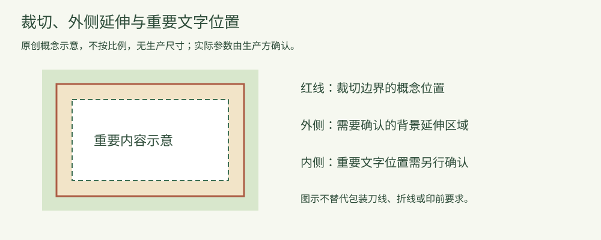

知识文章
版面图解：裁切边界、背景延伸与重要文字位置怎么区分？
2026-10-14 · 印个泡泡
三个位置解决不同问题，包装图稿仍应按实际刀线和生产要求确认。
背景想铺到边缘，文字又不希望被裁掉，需要讨论两类不同的问题。不要把背景延伸和文字位置都称作同一个“留边”，却没有说明指的是哪一侧。

原创概念示意，不按比例，无实际生产尺寸；不替代包装刀线、折线或工艺文件。
裁切边界描述成品范围
在平面印刷概念中，裁切位置用于说明成品的边界。包装还有具体的刀线、折线和连接部分，不能把一张普通矩形页面直接套成所有盒型的生产文件。
背景外侧延伸是另一项要求
Adobe的教学资料介绍了把图稿延伸到成品边缘以外，并通过裁切标记说明最终范围。背景延伸的目的与重要文字避开边缘不同，不能用一圈空白替代所有边缘处理。
重要文字位置需要独立确认
文字、标识与其他关键内容的位置，应结合实际结构与生产方要求核对。不同的裁切、折叠或封装区域可能需要不同安排；本文不提供统一毫米数。
交接时，把“成品范围”“背景边缘如何处理”“哪些内容不能受影响”分别说明，并使用已确认的结构文件。保留原稿，由设计与印前人员按要求完成相应处理，不建议凭示意图批量缩放或自动添加背景。
参考：Adobe Learn：Set a print bleed，访问2026-10-14。本文用于概念沟通，不承诺任意图稿可直接生产。
为你的产品，找到适合的包装。
选包装，获取报价 →